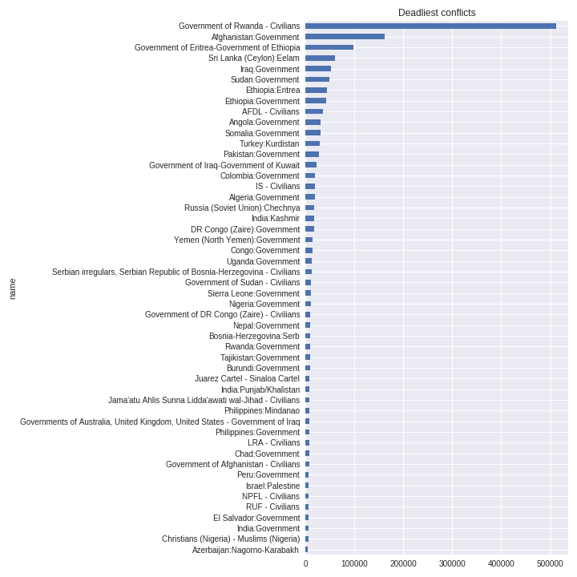
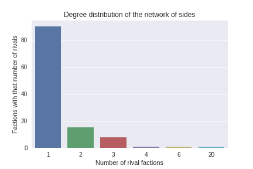

Since the end of the Cold War, the World has been witnessing a densification and complexification of the conflicts involving a huge number of countries. From local conflicts to conflicts spanning entire regions, the understanding of the depth and context of these events has been made more complex to non-initiated people. In our work we will attempt to use data analysis tools and techniques to extract meaningful information to help characterize and understand the main keys of those events.
Our work will be based on the UCDP dataset that tracks conflicts since 1989, on the UNHCR dataset (United Nations Human High Commissioner for Refugees), then we will use the GDP dataset of the UN and finally the HDI dataset.
First of all we based our work on the UCDP(GED-171) dataset. The raw data is organized so that every line in our dataframe represents an event. So we first of all grouped them by conflict, and aggregated some of the related statistics. The dataframe we got gave us a wide list of all the events that occured since 1989 across the world with the conflict id it is related to.
The Rwanda conflict initiated in 1994 is, by far, the first one in terms of victims with more than 500,000 dead people in total. The conflict that follows does not even reach 200,000 victims.
The first element we created to make it more meaningful and readable was an interactive timestamped map that represents all the events that occurred since 1989 and every year since then. Clicking on an event we are shown, in addition to the conflict id, the names of the two sides involved, the victims for each of them and the total.
To this first map we add a heatmap. This map plots all the events that occured on the planet in function of time, to show out the deadliest conflicts. We thus get a first approach on which regions of the globe have been hurt the most.
The first and obvious observation we make is that most of the conflicts reported since 1989 are located in Africa, Middle-East, in the zone Afghanistan-Pakistan and India-Bangladesh and in Latin America (mostly Colombia and Mexico).
As the real point of interest in this analysis are the factions involved in the conflicts we created a dataframe with one record per tuple and developped a network of sides where each node is a side and each edge is an event involving these two sides.
Plotting the degree distribution of the network of sides we realized that most of the factions fought against one unique opponent.
In addition, to make our results even more readable we used a chord diagram that represents the top-30 deadliest conflicts. In this diagram, for each continent, we link the factions between them where the size of the link on the graph gets bigger as the number of victims grows. Pointing a faction on the side circle gives the total number of victims this faction suffered and shows off the other factions it is related to, through the links that light up in the center of the circle. Pointing, then, one of those links in the center shows the name of the two factions involved in this conflict and the total number of victims in this conflict.
The results shown by these graphs are that the factions that suffered the highest number of victims are EPLF (Eritrean People's Liberation Front) in Africa, the Government of Afghanistan in Asia, the Government of Iraq in Middle-East, the Government of Russia in Europe and the Government of Colombia in America.
To show the relations between the events and the conflict they are related to, we created a network of distances where each conflict location will be the centroid of all its events (mean longitude and latitude). Each event will be linked to its respective conflict with an edge representing the distance to the center of the conflict. Then, all conflicts will be linked together by an edge describing the distance. The aim of this network is to find spatial relationship between various conflicts.
To make our analysis more consistent we added other datasets to our work. The first one is the UNHCR (United Nations Human High Commissioner for Refugees) dataset. This dataset records the refugee data of the UN that is a dataset relating the total number of refugees by country of departure/arrival and by year. Our approach was to link and try to correlate those population displacements to the conflicts that occurred across the planet. To this aim we created a first map representing both the conflicts (just like the first map we created in this work) and the total population displacements by country and by year. The total displacement choropleth represents people who left the country or moved inside this same country. We had to deal with some missing data especially when we did not have the country of origin of some immigrants. We made the choice to drop these data.
The first observation we can make is that an important concentration of conflicts in a determined area does not imply an important movement of population in the same time from the countries involved in those conflicts. An example of this observation is Nigeria which is not involved in significant population movements despite an important number of conflicts throughout the years. On the other hand, we see that countries where important population movements are observed are almost always involved in major (by major we mean a significant number) conflicts with important deaths. Thus, most important population displacements seem to be created by the concentration of conflicts in the area.
Finally, to add another dimension to our observations, we try to find a potential correlation between the conflicts we found and displayed, and the GDP(Gross Domestic products) and HDI(Human Development Index). Such as with the population displacement seen previously we create two maps, one with the gdp per country choropleth and the other one with the hdi per country choropleth.
The main observations we can find from these maps is that most of the countries with a high HDI and GDP are not involved in any (or at least just a few) conflicts. On the other hand many countries involved in a lot and bloody conflicts have a low GDP, especially in Africa and Middle-East.
All the code used to perform the data extraction and analysis can be found in the Jupyter notebooks in the Project folder